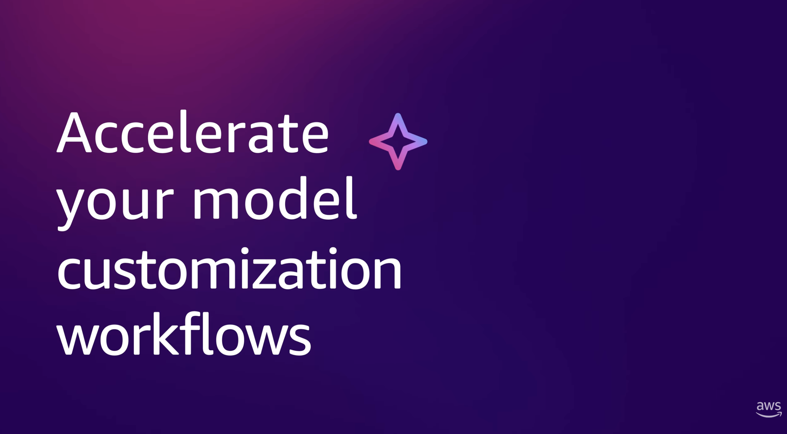

Designing Away the Complexity: AI Model Customization for Every Team

Fine-tuning an AI model meant doing two jobs at once
Before a team could adapt a foundation model to their use case, they had to first solve a separate problem: infrastructure. Which GPU instance type? How much capacity? How to configure networking, manage compute lifecycles, and set up MLOps tooling? This work had nothing to do with the actual ML objective - but it stood between every team and the thing they were trying to build.
Most teams lacked the MLOps expertise this required. They got stuck before they even started. The bottleneck wasn't intelligence or ambition; it was a design failure. The interface surfaced infrastructure decisions that most users couldn't meaningfully make, at the exact moment they needed to focus on their model.
For teams building agentic AI applications - where customised models that can reliably call tools and follow instructions are foundational - the gap between intent and execution was especially costly. Getting the model right requires iteration. Infrastructure friction makes iteration expensive. The design challenge was to make that friction disappear.

End-to-end design leadership from strategy to release
I led the design of this project from early problem framing through to UX readiness and release, directing one other designer across the full scope of the work. My role extended beyond craft: I worked closely with product teams to shape what the feature should be, not just how it should look, and made the connections needed to evaluate designs with the people who would actually use them.
A critical part of my contribution was bringing real customers into the process to evaluate the agentic workflows directly. These weren't lab sessions - they were working sessions with ML engineers and data science teams, exposing genuine friction and informing design decisions that would not have surfaced any other way. The feedback directly shaped how the agentic specification flow was structured and how much control users retained at each step.
At key milestones, I ran go/no-go UX readiness reviews - evaluating the final designs and ensuring that every aspect of the agentic experience was working correctly before release. This meant holding the quality bar not just for the UI but for the end-to-end agent behaviour: did it ask the right questions, generate sensible specifications, handle edge cases gracefully, and give users genuine confidence before anything ran.
One product, two fundamentally different users
The feature had to serve two user types whose needs pulled in opposite directions. ML engineers and data scientists understood fine-tuning techniques and wanted precise control - over hyperparameters, training configuration, instance behaviour, and experiment tracking. Developers and business teams had a clear use case and capable data, but lacked the vocabulary to translate their objective into technical configuration.
Serving both without compromising either demanded careful progressive disclosure. Every configuration decision needed a recommended default that a non-specialist could trust, while keeping advanced options accessible to the engineer who needed them. The path of least resistance had to be a good path - not a simplified path that would later need undoing.
The deeper challenge was the agentic workflow - a preview feature that lets users describe their business objective in natural language and have an AI agent generate the full customisation specification: dataset guidelines, reward functions, evaluation criteria, recommended model and hyperparameters. This was a fundamentally different design paradigm - moving from configuration-driven UI to objective-driven conversation. Designing it well meant solving for trust, transparency, and control across a multi-turn exchange that ends in an automated job.
Three principles that shaped every design choice
Remove infrastructure from the interaction entirely. No instance selection, no capacity planning. The system infers the right compute - users make model decisions, not infrastructure decisions.
Recommended defaults for every configuration decision. Advanced options always reachable but never in the way. The simple path and the powerful path are the same path.
Users describe what they want to achieve; the agent proposes how. Control is preserved through conversation, not configuration. Nothing runs until the user has reviewed and approved.
From business objective to running job - via conversation

The most novel design challenge was the agentic path: a multi-turn conversational interface that takes a natural language description of a business objective and produces a complete, reviewable fine-tuning specification. Designing this meant deciding exactly where the agent should speak, where the user should speak, and where the handoff should happen.
The user describes their use case and goal in natural language - no ML vocabulary required. The agent asks clarifying questions to understand the task, the data available, the performance expectations, and any constraints. The conversation is structured but feels open.
The agent generates a complete customisation specification: recommended model, technique (SFT, DPO, RLAIF, or RLVR), dataset guidelines, reward function design, hyperparameters, and evaluation criteria. The full specification is presented for review before any job is created.
The user can accept the specification, ask the agent to change specific elements, or continue the conversation to explore alternatives. Refinement happens through dialogue, not form fields. The agent explains its reasoning and incorporates feedback before the job is launched.
Once approved, the agent orchestrates the full pipeline - data preparation, training, evaluation - with integrated MLflow tracking. Results surface in the Playground for prompt-based evaluation before deployment. The user remains in control of the final release decision.

Solutions to the hardest design problems in this space
Trusted defaults
Every configuration parameter has a recommended default surfaced directly in the UI - not hidden in documentation. Defaults are derived from pre-optimised training recipes for each model and technique combination. This shifts the cognitive load from "what should I set this to?" to "does this look right?" - a much more manageable question for non-specialists and a faster starting point for experts.
Specification preview
Before any agentic job runs, the system surfaces the full specification as a reviewable artefact. This was a critical trust decision: the agent's proposal is made legible and editable before it becomes action. Users in customer evaluation sessions told us that seeing the complete plan - rather than just a confirmation prompt - was the moment they decided whether to trust the system.


Integrated evaluation
The model Playground is embedded directly in the post-training flow, not a separate tool. Users can test their customised model against the base model in single-prompt or chat mode before committing to deployment. This keeps evaluation in context - connected to the training decisions that produced the model - rather than requiring a context switch into a separate environment.
Deployment flexibility
Customised models can be deployed to either SageMaker endpoints or Amazon Bedrock from the same interface. The choice is presented as a clear, two-option decision at the moment of deployment - not a configuration buried in infrastructure settings. This respects the architectural choices teams have already made without forcing them to leave the customisation context to act on them.
From infrastructure bottleneck to production capability
- Shipped December 2025 across four AWS regions - US East, US West, Europe (Ireland), and Asia Pacific (Tokyo)
- Expanded in March 2026 to support serverless reinforcement fine-tuning for 12 additional models, including models up to 120B parameters
- Framework now applied across all AWS SageMaker AI projects - in use across 200 projects including production enterprise software used globally by thousands of users
- Agentic workflow adopted by teams with no dedicated MLOps resource - the primary user group the design was built to serve
- Customer evaluation sessions directly shaped the agentic specification flow and the structure of the review step before job launch
- UX readiness reviews at key milestones ensured end-to-end agent behaviour - not just the UI - met the quality bar for release
- Progressive disclosure pattern extended as a design standard across SageMaker AI's model customisation surface
- Directly applied novel findings and new human-agentic AI coordination patterns from research completed with my Design Scholar - bringing academic rigour into production product design
What designing for agentic workflows taught me about trust
The hardest design problem in this project wasn't the interface - it was the handoff. At the moment an agent proposes a specification and a user decides whether to trust it, the design has to do a great deal of work very quickly. It has to make the agent's reasoning legible, surface the right level of detail without overwhelming, and make it easy to adjust without making it feel like the whole point was just a long form in disguise.
Customer sessions were the most valuable input. Users consistently told us that the specification preview - seeing the full plan before anything ran - was the moment they decided whether to trust the system. That finding reshaped how we thought about the agentic workflow: not as a shortcut to configuration, but as a structured conversation that earns the right to act.
The most enduring lesson is that agentic AI in a professional context requires a different trust model than consumer AI. Users aren't just evaluating whether the output seems good - they're deciding whether to stake something real on the agent's judgement. Design has to make that decision informed, not just fast.
This project also changed how I work as a designer. The hi-fi functional UI for this case study - fully designed, interactive, and production-ready - was built in hours rather than days using Kiro, Amazon's AI agent for builders, powered by Anthropic's Claude Opus 4.6 model and paired with a design system MCP for full detailed design support. What previously required days of iteration across tools collapsed into a single focused session. The speed didn't compromise the craft - it removed the friction between thinking and making. When the tools are as capable as the products you are designing, the constraint shifts from execution to thinking.